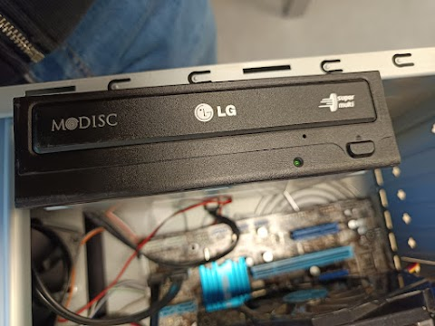
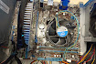
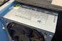

L'immagine mostra una foto di un componente hardware di un computer, un masterizzatore di DVD, che è un dispositivo che consente di scrivere (o "masterizzare") dati su dischi DVD.

L'immagine mostra l'interno di un computer, con la scheda madre, il dissipatore di calore con ventola per la CPU e vari cavi colorati. Sulla destra c'è una grande ventola di raffreddamento, probabilmente parte della scheda grafica.

L'immagine mostra l'alimentatore del computer, noto anche come PSU (Power Supply Unit). Questo componente è responsabile di fornire energia elettrica a tutti gli altri componenti del computer, come la scheda madre, la CPU, la scheda grafica, e altri dispositivi interni.